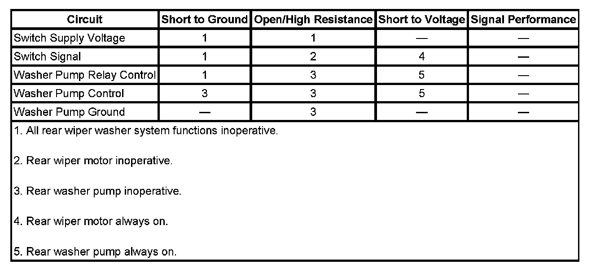

Rear Washer Inoperative
REAR WASHER INOPERATIVE
DIAGNOSTIC FAULT INFORMATION

IMPORTANT: Always perform the Diagnostic System Check - Vehicle prior to using this diagnostic procedure. Initial Inspection and Diagnostic Overview
CIRCUIT/SYSTEM DESCRIPTION
The rear window washer pump is controlled by the rear window wiper washer switch through the rear washer pump relay. The switch supply voltage is from the body control module (BCM), and when the WASH switch is pressed battery voltage is applied to the rear washer relay control circuit and to the rear wiper switch signal circuit. When the rear wiper motor module receives battery voltage on the rear wiper switch signal circuit, the wiper motor will operate continuously for as long as the voltage is present and several cycles after the switch is released. The rear washer relay control circuit is used to energize the relay coil and close the rear washer pump control circuit to battery voltage.
CIRCUIT/SYSTEM VERIFICATION
1. Ignition ON, Press the rear window washer switch.
- If the rear wiper motor and the rear washer pump are inoperative perform the Rear Wiper Washer Switch Circuit Test.
- If the rear wiper motor operates and the rear washer pump is inoperative perform the Rear Washer Pump Circuit Test.
- If the rear wiper motor is inoperative and the rear washer pump operates perform the Rear Wiper Motor Circuit Test.
CIRCUIT/SYSTEM TESTING
Rear Wiper Washer Switch Circuit Test
1. Disconnect the rear wiper washer switch pigtail connector.
2. Ignition ON, verify that a test lamp illuminates when connected from the switch supply circuit terminal in the harness connector to ground.
- If the test lamp does not illuminate test the switch supply circuit for an open or short to ground. If the circuit tests normal replace the BCM.
3. If the circuits test normal replace the rear wiper washer switch.
Rear Washer Pump Circuit Test
1. Remove the REAR WASH 15A fuse in the underhood fuse block and connect a fused jumper wire to the washer pump output fuse terminal in the fuse block.
2. Verify that the rear washer pump operates when the other end of the fused jumper wire is connected to battery voltage.
- If the washer pump does not operate, test the washer pump control and ground circuits for an open or short to ground. If the circuits test normal replace the rear washer pump.
3. Disconnect the underhood fuse block connector C4 and connect a test lamp from the rear washer pump relay control circuit terminal in the harness connector to ground.
4. Ignition on, verify that a test lamp illuminates when the rear washer switch is pressed.
- If the test lamp does not illuminate test the relay control circuit for an open or short to ground. If the circuit tests normal replace the rear wiper washer switch.
5. If the circuits test normal replace the underhood fuse block.
Rear Wiper Motor Circuit Test
1. Disconnect the rear wiper motor connector and connect a test lamp from the rear wiper switch signal circuit terminal in the harness connector to ground.
2. Ignition on, verify that the test lamp will illuminate when the WASH switch is pressed.
- If the test lamp does not illuminate test the rear wiper switch signal circuit for an open or short to ground. If the circuit tests normal replace the rear wiper washer switch.
3. If the circuits test normal replace the rear wiper motor.
REPAIR INSTRUCTIONS
IMPORTANT: Always perform the Diagnostic Repair Verification after completing the diagnostic procedure. Verification Tests
- Rear Window Wiper and Washer Switch Replacement
- Rear Window Washer Pump Replacement
- Rear Window Wiper Motor Replacement
- Underhood Electrical Center or Junction Block Replacement